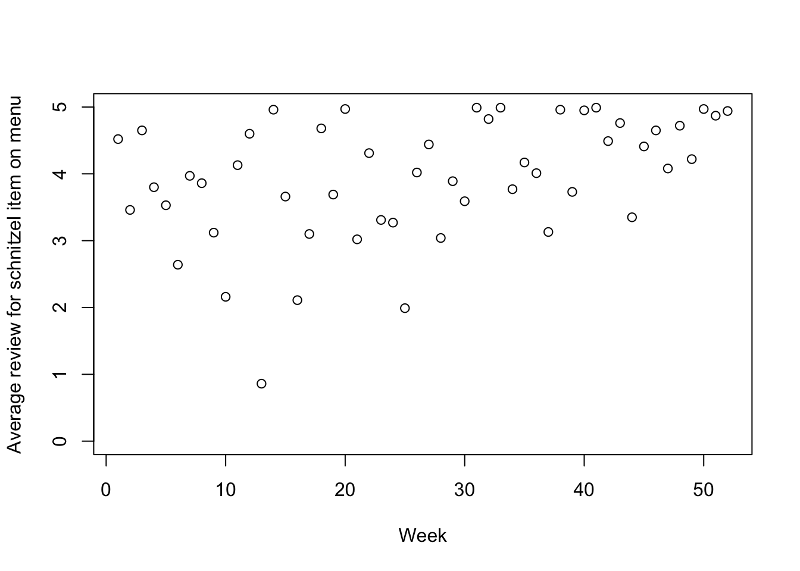

food_data = c(4.52, 3.46, 4.65, 3.8, 3.53, 2.64, 3.97, 3.86, 3.12, 2.16, 4.13, 4.6, 0.86,
4.96, 3.66, 2.11, 3.1, 4.68, 3.69, 4.97, 3.02, 4.31, 3.31, 3.27, 1.99, 4.02,
4.44, 3.04, 3.89, 3.59, 4.99, 4.82, 4.99, 3.77, 4.17, 4.01, 3.13, 4.96, 3.73, 4.95,
4.99, 4.49, 4.76, 3.35, 4.41, 4.65, 4.08, 4.72, 4.22, 4.97, 4.87, 4.94) Exercise 9: MCMC Hacking
Overview
In this exercise you will implement a custom MCMC sampler for a change point detection Bayesian model.
Getting the data
Copy the blurb below into a file. You will need it in Q3.
Problem formulation
We use a changepoint model to study the popularity of an item from a restaurant’s menu. The data we analyze are reviews of a restaurant item (a schnitzel) for each of 52 weeks.
The raw data look like this:
plot(1:length(food_data), food_data, xlab = "Week", ylab = "Average review for schnitzel item on menu",
ylim = c(0,5), xlim = c(1, 52))
Goal: Find if the schnitzel rating changed in that time period, and if so, when.
This is a simple example of a change point detection task.
Bayesian model
Change point models are related to mixture models, but instead of each data point being free to pick which of the two clusters to belong to, change point models have a different cluster membership mechanism, defined as follows:
- Pick a change point \(C\) uniformly among the days \(d \in \{1, 2, \dots, 52\}\).
- The likelihood for days before the change point \(C\) uses the parameter of cluster 1.
- The likelihood for days after the change point \(C\) uses the parameter of cluster 2.
Our mathematical description:
\[\begin{align*} \mu_i &\sim {\mathrm{Unif}}(0.1, 0.9), \text{ for }i \in \{1, 2\}, \;\;\text{(parameters for 2 clusters)} \\ C &\sim {\mathrm{Unif}}\{1, 2, \dots 52\}, \;\;\text{(change point)} \\ Y_d/5 &\sim \text{BetaMP}(\mu_{\mathbb{1}[d < C] + 1}, 5), \text{ for }d \in \{1, 2, \dots, 52\} \;\;\text{(likelihood)}. \end{align*}\] Note that we model \(Y_d / 5\), as average weekly food item ratings are in the range \([0, 5]\).
R implementation:
We provide an implementation of the joint distribution of this model below. You will need it in this exercise.
set.seed(1)
log_joint = function(means, change_point, y) {
# Return log(0.0) if parameters are outside of the support
if (means[[1]] < 0.1 | means[[2]] < 0.1 | means[[1]] > 0.9 | means[[2]] > 0.9 | change_point < 1 | change_point > length(y))
return(-Inf)
log_prior =
dunif(means[[1]], 0.1, 0.9, log = TRUE) +
dunif(means[[2]], 0.1, 0.9, log = TRUE)
log_likelihood = 0.0
for (i in 1:length(y)) {
mean = if (i < change_point) means[[1]] else means[[2]]
log_likelihood = log_likelihood + dbeta(y[[i]]/5, mean*5, (1-mean)*5, log = TRUE)
}
return(log_prior + log_likelihood)
}Explanation: the argument…
- …
meanstakes in a vector of length two, with the two components corresponding to \(\mu_1\) and \(\mu_2\). - …
change_pointtakes in an integer, corresponding to \(C\) in the mathematical description above. - …
ytakes in an array of ratings in \([0,5]\), corresponding to \(Y = (Y_1, Y_2, \dots, Y_{52})\).
Notice also we return the log of the joint distribution, so each term in the joint is computed in log scale using the log = TRUE option.
Q.1: A custom MCMC sampler
- Define mathematically an irreducible and invariant MCMC algorithm to sample from the change point model’s posterior.
Click for hint
Start by defining a kernel \(K_1\) modifying only the means parameter, then a second one, \(K_2\), modifying the change_point variable. Write the proposal \(q_k\) for \(k \in \{1, 2\}\) for each kernel. Then specify a kernel \(K\) based on \(K_1\) and \(K_2\).
Note: to get good mixing in Q3, your discrete proposal should have a standard deviation greater than 5.
- Implement the MCMC algorithm you describe mathematically in R. You should follow the following template:
mcmc = function(means, change_point, y, n_iterations) {
change_point_trace = rep(-1, n_iterations)
for (i in 1:n_iterations) {
# TODO: implement a MCMC sampler
}
# Return:
# - the trace of the change points (for question 1)
# - the means at the last iteration (for question 2)
return(
list(
change_point_trace = change_point_trace,
last_iteration_means = means
)
)
}Note:
- Make sure to use the input arguments
meansandchange_pointas initial values of your MCMC algorithms (this will be important for Q2). - The function returns two pieces of information:
- The list of samples (“trace”) for the parameter of interest,
change_point(used for Q3). - The mean parameter at the very end of the MCMC algorithm (used for Q2).
- The list of samples (“trace”) for the parameter of interest,
Q.2: MCMC correctness testing
We now subject our MCMC implementation to an “exact invariance test†to validate its correctness.
- Start by completing the function below to perform forward simulation on the same Bayesian model as in Q1. The input argument
synthetic_data_sizespecifies the size of the dataset to generate.
forward = function(synthetic_data_size) {
# TODO: implement forward simulation
return(list(
means = means,
change_point = change_point,
data = data
))
}Recall that each iteration of the exact invariance test starts by forward sampling, followed by either 0 or several rounds of MCMC (we will use 200). We provide this function to do this for you:
forward_posterior = function(synthetic_data_size, n_mcmc_iters) {
initial = forward(synthetic_data_size)
if (n_mcmc_iters > 0) {
samples = mcmc(initial$means, initial$change_point, initial$data, n_mcmc_iters)
return(samples$last_iteration_means[[1]])
} else {
return(initial$means[[1]])
}
}- Apply the test to your code, by completing the lines below.
# Note: we use synthetic datasets with only 5 observations to speed things up
forward_only = replicate(1000, forward_posterior(5, 0))
with_mcmc = replicate(1000, forward_posterior(5, 200))
# TODO: perform 2-samples t-test or Kolmogorov-Smirnov test
# to see if forward_only and with_mcmc follow the same distribution. Report the p-value. Recall that if it is “tiny†(e.g., less than 0.01), it suggests there may be a bug in your code.
Click for tricks useful if you get a tiny p-value
What to do if you suspect there is a bug?
First, try to narrow down if the putative bug is in the change-point MCMC move, or in the means MCMC move, or the forward sampling function.
To do so, temporarily turn off the sampler \(K_1\), and run the test. Then do the same for \(K_2\).
If the low p-value only shows up for one of the \(K_i\), that suggests the bug might be located there. If it’s on each separately, then there could be a common mistake, or the bug could be in the forward simulation (or testing) code.
Q.3: Using your sampler for data analysis
Perform 10,000 iterations of MCMC on the text message data.
samples = mcmc(...)Recall that you can access the list of sampled change point using samples$change_point_trace.
Create two trace plots for the change point parameter, one for the full trace, one for the subset of samples in the second half (via
[5000:10000]). Comment on the mixing behaviour.Produce a histogram from the second half of samples. Briefly comment on the results in light of the note below.
Note: This dataset comes with the additional information that “the 28th week corresponds to my Oma’s (grandma’s) birthday. At this point, I (the chef) decided to change the schnitzel recipe based on her tastes.”